Service Backup GUIFAQ |
1. WHAT IS THE DIFFERENCE BETWEEN EXIT SERVICE BACKUP AND CLEAN UP SERVICE BACKUP?
2. WHY IS THE "EXPORT CCC'S CONFIGURATION TO THE CENTRAL SERVER" BUTTON GRAYED OUT?
3. WHY IS THE "EXPORT CCC'S DIGITAL FORECAST TO THE CENTRAL SERVER" BUTTON GRAYED OUT?
4. WHEN SHOULD I USE THE REFRESH BUTTON?
5. DO I NEED TO EXPORT A FAILED SITE'S GRIDS TO THE CENTRAL SERVER?
SCAN THROUGH ERRORS THAT OCCUR WHEN:
IMPORTING CONFIGURATION
IMPORTING DIGITAL DATA
STARTING GFE
EXPORTING DIGITAL DATA BACK TO A FAILED
SITE
EXPORTING A FAILED SITE'S DIGITAL DATA
TO THE CENTRAL SERVER
EXPORTING CONFIGURATION TO THE CENTRAL
SERVER
EXPORTING YOUR DIGITAL DATA TO THE
CENTRAL SERVER
EXITING SERVICE BACKUP
CLEANING UP SERVICE BACKUP
1. WHAT IS THE DIFFERENCE BETWEEN "EXIT SERVICE BACKUP" AND "CLEAN UP SERVICE BACKUP"? [BACK TO THE TOP]
The Exit Service Backup button is only enabled while you are in Service Backup Mode. Selecting this button will run the clean up script and will exit the Service Backup GUI when it is finished. The Clean Up Service Backup button is enabled even when you are not in Service Backup Mode. Selecting this button while in Service Backup Mode will run the clean up script, but will not exit the Service Backup GUI. Selecting this button while you are not in Service Backup Mode will bring up a GUI that allows you to enter the 3 letter ID of the site that you wish to clean up.
2. WHY IS THE "EXPORT CCC'S CONFIGURATION TO THE CENTRAL SERVER" BUTTON GRAYED OUT? [BACK TO THE TOP]
This button is only enabled while you are not in Service Backup Mode and the Service Backup GUI is started as user ifps. If the GUI is started by any other user or you are in Service Backup Mode, this button will be grayed out. To start the GUI as user ifps:
1. su
ifps
2. cd /awips/ifps/primary/bin
3. ./service_backup.bat
3. WHY IS THE "EXPORT CCC'S DIGITAL FORECAST TO THE CENTRAL SERVER" BUTTON GRAYED OUT? [BACK TO THE TOP]
This button will become disabled when your are in the process of exporting your grids to the central server for service backup. At this time, the button will read "Currently Exporting CCC's Digital Data" and you may not start up another export until it is finished. If the export was started from the ifps crontab, then the script will sleep for a random amount of time (up to 30 minutes) between running ifpnetCDF and sending the grids to the central server. This is done to prevent all WFOs from exporting their grids at the same time. If you send the grids from the Service Backup GUI, they will be send immediately after ifpetCDF runs.
4. WHEN SHOULD I USE THE REFRESH BUTTON? [BACK TO THE TOP]
The REFRESH button will update the state of the Service Backup GUI. It is a good idea to press the REFRESH button before performing any other actions to ensure that the GUI reflects your current service backup mode.
5. DO I NEED TO EXPORT A FAILED SITE'S GRIDS TO THE CENTRAL SERVER? [BACK TO THE TOP]
Starting in IFPS16.1, the Service Backup GUI contains an option to export the failed site's digital data to the central server. This is a cautionary step to help prevent the loss of data when restoring grids to a failed site. If you are unable to export a failed site's grids back to them, you can export them to the central server. Then, the failed site can contact the NCF, who has instructions on how to restore the digital data from the central server.
6. ERROR MESSAGES [BACK TO THE TOP]
This section will explain some of the different error messages that you may see while using the Service Backup GUI.
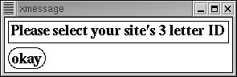
When you start the Service Backup GUI while in service backup mode, you will be prompted to select a domain. You will see this message if you attempt to start the Service Backup GUI as the failed site. The Service Backup GUI must always be started as your site.
IMPORTING CONFIGURATION [BACK TO THE TOP]
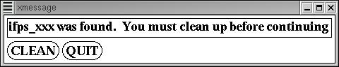
Before you import a failed site's configuration, a script will run to make sure that there are no service backup databases on your system that will cause any problems. If any IFPS databases are found, you will see this message. If you wish to continue, you must select the CLEAN button to clean up that site's database and configuration. If you do not wish to clean up this site's database and configuration, select QUIT to return to the Service Backup GUI. For more information, see /data/logs/adapt/ifps/<date>/svcbu_check_<time> on dx4f.
Before you import a failed site's configuration, a script will run to make sure that there are no service backup files on your system that will cause any problems. If any IFPS files are found, you will see this message. If you wish to continue, you must select the CLEAN button to clean up that site's configuration. If you do not wish to clean up this site's configuration, select QUIT to return to the Service Backup GUI. For more information, see /data/logs/adapt/ifps/<date>/svcbu_check_<time> on dx4f.

Before you import a failed site's configuration, a script will run to make sure that there are no service backup files on your system that will cause any problems. If any GFE files are found, you will see this message. If you wish to continue, you must select the CLEAN button to clean up that site's configuration. If you do not wish to clean up this site's configuration, select QUIT to return to the Service Backup GUI. For more information, see /data/logs/adapt/ifps/<date>/svcbu_check_<time> on dx4f.

Before you import a failed site's configuration, a script will run to make sure that there are no service backup files on your system that will cause any problems. If any GFE files are found and the Service Backup GUI is not able to determine the failed site's ID, you will see this message. Press the DETAILS button to view the log file to see what files were found. You must delete these files before you are allowed to continue. If you do not wish to clean up, select QUIT to return to the Service Backup GUI. For more information, see /data/logs/adapt/ifps/<date>/svcbu_check_<time> on dx4f.

You will see this error message if you import you own site ID when asked what site's configuration you wish to import. If your site has multiple domains, you will not be allowed to import either domain's configuration.
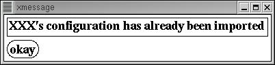
You will see this error message when you attempt to import a failed site's configuration while in service backup mode. If you wish to import this site's configuration again or another site's configuration, use the Clean Up Service Backup button to clean up this site's configuration first.

You will see this error message if a failed site's configuration fails to reach your site after 30 minutes. Possible reasons for seeing this message are problems with msg_send or the failed site's configuration is not present on the central server. If you would like to continue to wait for the failed site's configuration, for up to another 30 minutes, press YES. If you do not wish to wait, select NO. Selecting NO will clean up the necessary lock files and return you to the Service Backup GUI.
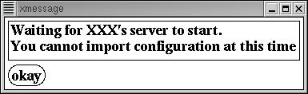
You will see this error message when you attempt to import a failed site's configuration while you are waiting for a failed site's server to start. If you wish to import a failed site's configuration, you must first wait until after the server is started. Be sure to clean up before importing.

You will see this error message when you attempt to import a failed site's configuration while you are importing a failed site's digital data. If you wish to import a failed site's configuration, you must first wait until after the import of the digital data is finished. Be sure to clean up before importing.
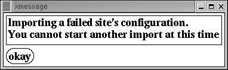
You will see this error message when you attempt to import a failed site's configuration while an import process is already running. If you wish to import a failed site's configuration, you must first wait until the first import is finished. Be sure to clean up before importing.
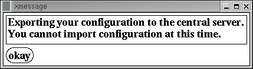
You will see this error message when you attempt to import a failed site's configuration while exporting your configuration to the central server for service backup. If you wish to import a failed site's configuration, you must first wait until the export is finished.
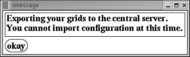
You will see this error message when you attempt to import a failed site's configuration while exporting your grids to the central server for service backup. If you wish to import a failed site's configuration, you must first wait until the export is finished.
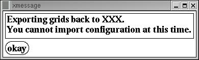
You will see this error message when you attempt to import a failed site's configuration while exporting grids back to a failed site. If you wish to import another failed site's configuration, you must wait until the export is finished. Be sure to clean up the first site's configuration before starting another import.
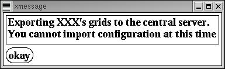
You will see this error message when you attempt to import a failed site's configuration while exporting a failed site's grids to the central server. If you wish to import another failed site's configuration, you must wait until the export is finished. Be sure to clean up the first site's configuration before starting another import.
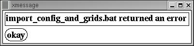
You will see this error message if there was a problem importing a failed site's configuration, digital data, and/or starting their GFE. For more information, see /data/logs/adapt/ifps/<date>/svcbu_doall_<time> on the machine that you started the import from.
IMPORTING DIGITAL DATA [BACK TO THE TOP]
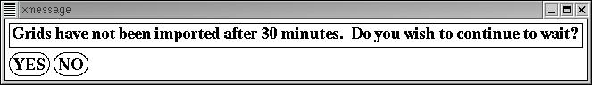
You will see this message if a failed site's digital data has not reached your site after 30 minutes. Possible reasons for seeing this message are problems with msg_send or the failed site's digital data is not present on the central server. If you wish to continue to wait for the failed site's grids, for up to 30 minutes, press YES. If you do not wish to wait, press NO. Selecting NO will clean up the necessary lock files and will return you to the Service Backup GUI. You will still be in service backup mode.

If you choose to import a site's configuration and import their digital data and/or start their GFE, the Service Backup GUI will make 10 attempts at 30 second intervals to verify that the failed site's server has started on dx4f. If the failed site's server fails to start or takes more than 6 minutes to start, you will see this message. For more information, see /data/logs/adapt/ifps/<date>/SVCBU_import_config_<time> and /data/logs/adapt/ifps/<date>/svcbu_doall_<time> on the machine that you started the import from.
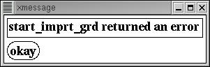
You will see this message if there was a problem importing a failed site's digital data. For more information, see /data/logs/adapt/ifps/<date>/svcbu_reqGrd_<time> on the machine you ran the import from.
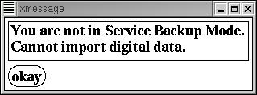
You will see this error message when you attempt to import a failed site's digital data while you are not in Service Backup Mode. Import the failed site's configuration before importing their digital data.
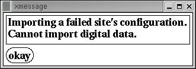
You will see this error message when trying to import a failed site's digital data while importing their configuration. Wait until the configuration import is complete before importing a failed site's digital data.
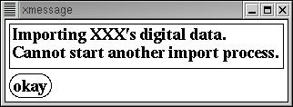
You will see this error message when trying to import a failed site's digital data while an import is already running. Wait until the first set of grids has finished importing before importing again.
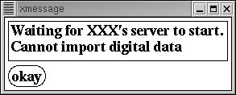
You will see this error message when trying to import a failed site's digital data while the failed site's server is trying to start. Please wait until the failed site's server is running to import digital data.

You will see this error message when trying to import a failed site's digital data while exporting your configuration to the central server. You must wait until the export is finished before you can begin to import digital data for a failed site.
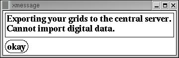
You will see this error message when trying to import a failed site's digital data while exporting your grids to the central server. You must wait until the export is finished before you can begin to import digital data for a failed site.
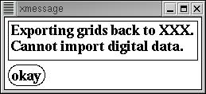
You will see this error message when trying to import a failed site's digital data while exporting grids back to the failed site. If you wish to re-import the failed site's digital data, you must wait until the export has finished.
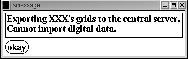
You will see this error message when trying to import a failed site's digital data while exporting a failed site's grids to the central server. If you wish to re-import the failed site's digital data, you must wait until the export is finished.
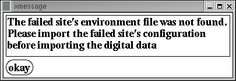
If the Service Backup GUI is not able to find the failed site's environment file, it is a likely sign that there was a problem importing the failed site's configuration. If this is the case, you will not be able to import the failed site's digital data. You should clean up the failed site's configuration and import it again. For more information, see /data/logs/adapt/ifps/<date>/svcbu_<time>.
STARTING GFE [BACK TO THE TOP]
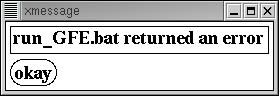
You will see this message if there was a problem starting GFE for a failed site. For more information, see /data/logs/adapt/ifps/<date>/svcbuGFE_<time> on the machine that you tried to start GFE from.
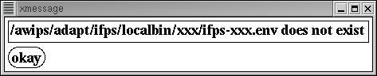
When trying to start GFE for any domain, the Service Backup GUI must first source that domain's environment file. If the Service Backup GUI is not able to find a failed site's environment file, it will not be able to start GFE for that site. For more information, see /data/logs/adapt/ifps/<date>/svcbu_doall_<time>.
EXPORTING DIGITAL DATA BACK TO A FAILED SITE [BACK TO THE TOP]
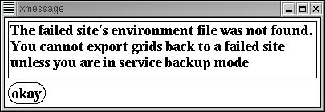
If the Service Backup GUI is not able to find the failed site's environment file, it is a likely sign that there was a problem importing the failed site's configuration or you are not in service backup mode. If this is the case, you will not be able to export the grids to a failed site. Ensure that you are in service backup mode and that the failed site's environment file is present. For more information, see /data/logs/adapt/ifps/<date>/svcbu_<time>.

You will see this message if there was an error exporting the digital data back to a failed site. For more information, see /data/logs/adapt/ifps/<date>/svcbu_expbksiteGrd_<time> on the machine that you ran the export from.

You will see this error message if you attempt to export grids back to a failed site while you are not in Service Backup Mode. You must be in Service Backup Mode to export digital data back to a failed site.

You will see this error message when attempting to export grids back to a failed site while you are importing their configuration. Wait until the import is finished before exporting the digital data back to the failed site.

You will see this error message when attempting to export grids back to a failed site while their server is trying to start. Wait until the server is started before exporting the digital data back to the failed site.

You will see this error message when attempting to export grids back to a failed site while you are importing the site's digital data. Wait until the import is finished before exporting the digital data back to the failed site.
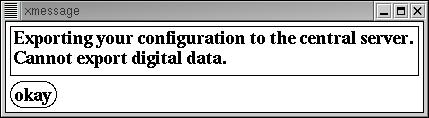
You will see this error message when attempting to export grids back to a failed site while you are exporting your configuration to the central server for service backup. You must wait until the export is finished before you can begin exporting grids back to a failed site.

You will see this error message when attempting to export grids back to a failed site while exporting your grids to the central server. You must wait until the export is finished before you can begin exporting grids back to a failed site.
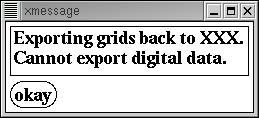
You will see this message when you attempt to export digital data back to a failed site while one export of the data is already running. If you wish to re-export the digital data back to the failed site, you must wait for the first export to finish.

You will see this error message when you attempt to export digital data back to a failed site while exporting the failed site's grids to the central server. If you wish to export the failed site's grids back to them, you must wait for the first export to finish.
EXPORTING A FAILED SITE'S DIGITAL DATA TO THE CENTRAL SERVER [BACK TO THE TOP]
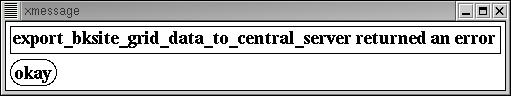
You will see this message if there was a problem exporting a failed site's digital data to the central server. For more information, see /data/logs/adapt/ifps/<date>/svcbu_exprtbksiteGrdToCS_<time> on the machine you ran the export from.
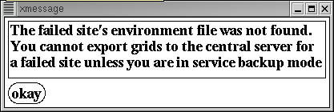
You will see this error message if you try to export a failed site's digital data to the central server and the failed site's environment file was not found by the Service Backup GUI. Make sure that you are in service backup mode and that /awips/adapt/ifps/localbin/<failed site>/ifps-<failed site>.env is present.
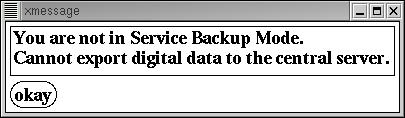
You will see this error message if you try to export a failed site's digital data to the central server while you are not in service backup mode. If you wish to export a failed site's grids to the central server, you must first import the failed site's configuration.

You will see this error message if you try to export a failed site's digital data to the central server while importing their configuration. You must first let the import finish before you can begin exporting to the central server.
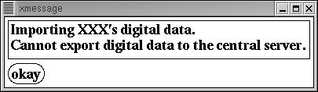
You will see this error message if you try to export a failed site's digital data to the central server while importing their digital data. If you wish to export the failed site's digital data to the central server, you must let the import finish first.

You will see this error message if you try to export a failed site's digital data to the central server while waiting for their server to start. Verify that the failed site's server is running before exporting their grids to the central server.
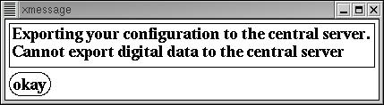
You will see this error message if you try to export a failed site's digital data tot he central server while exporting your configuration to the central server. You must wait for the first export to finish before you can export a failed site's digital data to the central server.

You will see this error message if you try to export a failed site's digital data to the central server while exporting your digital data to the central server. You must wait for your export to finish before you can export the failed site's grids to the central server.
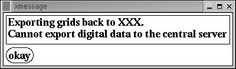
You will see this error message if you try to export a failed site's digital data to the central server while exporting the grids back to the failed site. You must first finish exporting the grids to the failed site before you can send them to the central server.

You will see this error message if you try to export a failed site's digital data to the central server while one export process is already running. If you wish to re-export the failed site's digital data, you must let the first export process finish.
EXPORTING CONFIGURATION TO THE CENTRAL SERVER [BACK TO THE TOP]
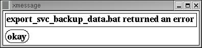
You will see this message if there was a problem exporting your configuration to the central server. For more information, see /data/logs/adapt/ifps/<date>/svcbu_<time> on the machine that you ran the export from.
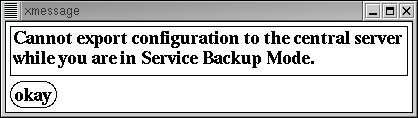
You will see this error message if you try to export your configuration to the central server while you are in Service Backup Mode. You must exit Service Backup Mode before you can export your configuration.

You will see this error message if you try to export you configuration to the central server while the export is already running. If you wish to re-export your configuration, you must wait for the first export to finish.
EXPORTING YOUR DIGITAL DATA TO THE CENTRAL SERVER [BACK TO THE TOP]
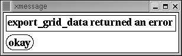
You will see this message if there was a problem exporting your digital data to the central server. For more information, see /data/logs/adapt/ifps/<date>/svcbu_expGrd_<time> on the machine that you ran the export from.

You will see this message if you try to export your grids to the central server while an export is already running. If you wish to re-export your grids to the central server, you must wait for the first export to finish.
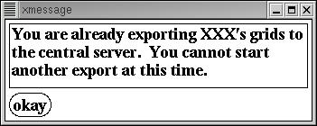
You will see this error message if you try to export your digital data to the central server while exporting a failed site's digital data to the central server. You must wait for the first export to finish before you can export your grids.
EXITING SERVICE BACKUP [BACK TO THE TOP]

You will see this error message if you try to exit service backup while you are not in Service Backup Mode. You must be in Service Backup Mode to use the Exit button. If you wish to run the cleanup script, use the "CLEAN UP SERVICE BACKUP" button.
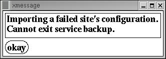
You will see this error message if you try to exit service backup while importing a failed site's configuration. Wait until the import is complete before exiting service backup.
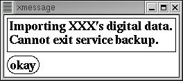
You will see this error message if you try to exit service backup while importing a failed site's digital data. Wait until the import is complete before exiting service backup.
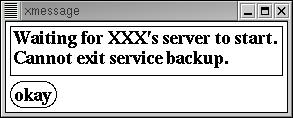
You will see this error message if you try to exit service backup while waiting for a failed site's server to start. Wait until the server is started before exiting service backup.
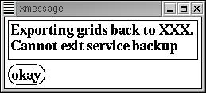
You will see this error message when trying to exit service backup while exporting grids back to a failed site. You must wait until the export is finished before you can exit service backup.
CLEANING UP SERVICE BACKUP [BACK TO THE TOP]
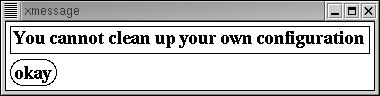
You will see this message if you attempt to clean up your own site's configuration files. If your site has multiple domains, you will not be allowed to clean up either domain's configuration.
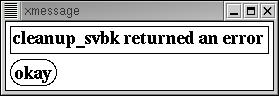
You will see this message if there was a problem running the cleanup script. For more information, see /data/logs/adapt/ifps/<date>/svcbu_cleanup_<time> on dx4f.

You will see this message if you try to run the cleanup script while the failed site's server is trying to start. Wait until the server is started before you run the cleanup script.

You will see this message if you try to run the cleanup script while importing a failed site's configuration. Wait until the import is complete before you run the cleanup script.

You will see this message if you try to run the clean up script while exporting grids back to a failed site. You must wait until the export is finished before you can clean up service backup.

You will see this error message if you try to run the clean up script while exporting a failed site's grids to the central server. You must let the export finish before you can clean up service backup.